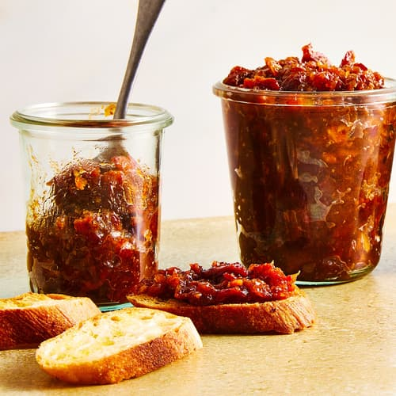

Bacon Jam

Description
Bacon jam, absolutely stunning piece for burgers or amazing snack!
Ingredients
- 400g bacon, thin sliced
- 4 onions
- 2 tablespoons of oil/fat
- 1/2 cup brown sugar
- 1/2 cup water
- 1/3 strong coffee
- 1 spoon balsamico
Steps
Making the jam
- Lay bacon slices on top of each othere and cube the bacon. Put in the oven, preheated for 190 C
- Fry onion in a pan, add sugar and caramelize. Takes about 10 min.
- Add balsamico, coffee, water. Fry for 20 minutes
- Remove bacon from oven, it should be nice and browned. Remove leftover fat and add to the onion mixture
- Put in containers, keeps well for about 2 weeks.